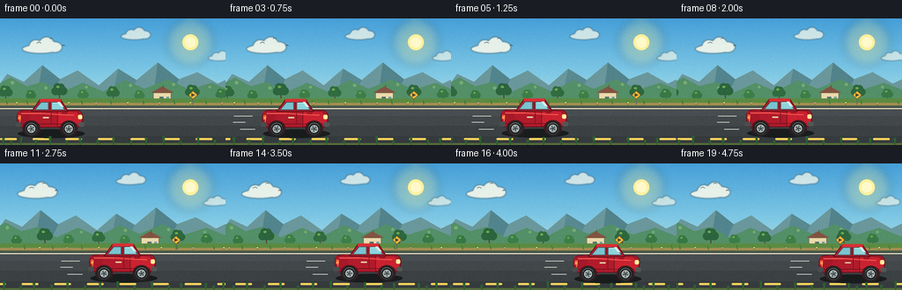
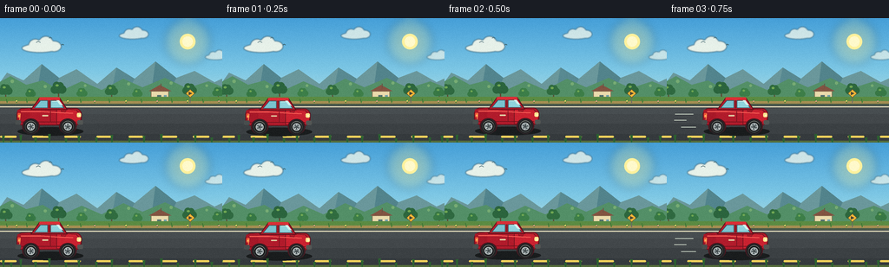

CODING AGENTS AS PIXEL WORLD MODELS
traex/DeepSeek-V4.1-Flash · instance_preservation_0028
点击播放 · 原生 RGB 像素
逐轮保存的候选
回放视频、检查图与代码变化。
每份候选均可单独播放。实际图片检查记录在下方工具轨迹中。
候选 01播放与检查图
点击播放 · 原生 RGB 像素


展开代码变化
--- 上一保存版本
+++ 本次保存版本
@@ -0,0 +1,623 @@
+"""Procedural roadside animation for: "A red car is moving along the road."""
+
+from pathlib import Path
+import math
+
+import numpy as np
+from PIL import Image, ImageDraw, ImageFilter
+
+import artifact_io
+
+
+CASE_DIR = Path(__file__).resolve().parent
+WIDTH, HEIGHT = 256, 144
+FRAME_COUNT, FPS = 20, 4
+SCALE = 4
+CW, CH = WIDTH * SCALE, HEIGHT * SCALE
+
+
+def rgba(value, alpha=255):
+ """Convert a compact RGB/RGBA tuple to a PIL color."""
+ return (*value[:3], alpha)
+
+
+def box(values):
+ return tuple(round(value * SCALE) for value in values)
+
+
+def point(values):
+ return tuple(round(value * SCALE) for value in values)
+
+
+def line_width(value):
+ return max(1, round(value * SCALE))
+
+
+def ellipse(draw, xy, fill=None, outline=None, width=1):
+ draw.ellipse(box(xy), fill=fill, outline=outline, width=line_width(width))
+
+
+def rectangle(draw, xy, fill=None, outline=None, width=1):
+ draw.rectangle(box(xy), fill=fill, outline=outline, width=line_width(width))
+
+
+def rounded(draw, xy, radius, fill=None, outline=None, width=1):
+ draw.rounded_rectangle(
+ box(xy),
+ radius=round(radius * SCALE),
+ fill=fill,
+ outline=outline,
+ width=line_width(width),
+ )
+
+
+def polygon(draw, xy, fill=None, outline=None, width=1):
+ draw.polygon([point(p) for p in xy], fill=fill, outline=outline, width=line_width(width))
+
+
+def line(draw, xy, fill, width=1):
+ draw.line([point(p) for p in xy], fill=fill, width=line_width(width), joint="curve")
+
+
+def arc(draw, xy, start, end, fill, width=1):
+ draw.arc(box(xy), start, end, fill=fill, width=line_width(width))
+
+
+def sky_image():
+ """A warm, clear sky with a very gentle vertical gradient."""
+ stops = [
+ (0.00, (69, 159, 216)),
+ (0.44, (128, 201, 229)),
+ (0.76, (190, 226, 220)),
+ (1.00, (239, 241, 194)),
+ ]
+ y = np.linspace(0.0, 1.0, CH)
+ colors = np.zeros((CH, 3), dtype=np.float32)
+ for index in range(len(stops) - 1):
+ a_pos, a_color = stops[index]
+ b_pos, b_color = stops[index + 1]
+ mask = (y >= a_pos) & (y <= b_pos)
+ local = (y[mask] - a_pos) / (b_pos - a_pos)
+ for channel in range(3):
+ colors[mask, channel] = (
+ np.asarray(a_color[channel], dtype=np.float32) * (1.0 - local)
+ + np.asarray(b_color[channel], dtype=np.float32) * local
+ )
+ rows = np.repeat(colors[:, None, :], CW, axis=1).astype(np.uint8)
+ return Image.fromarray(rows, "RGB")
+
+
+def add_glow(image, center, radius, color):
+ glow = Image.new("RGBA", image.size, (0, 0, 0, 0))
+ draw = ImageDraw.Draw(glow)
+ cx, cy = center
+ for amount, alpha in ((1.0, 42), (0.72, 58), (0.46, 80)):
+ r = radius * amount
+ ellipse(
+ draw,
+ (cx - r, cy - r, cx + r, cy + r),
+ fill=rgba(color, alpha),
+ )
+ glow = glow.filter(ImageFilter.GaussianBlur(radius * SCALE * 0.16))
+ return Image.alpha_composite(image.convert("RGBA"), glow).convert("RGB")
+
+
+def draw_cloud(draw, x, y, scale=1.0, alpha=205):
+ color = (255, 252, 235, alpha)
+ ellipse(draw, (x - 18 * scale, y - 3 * scale, x + 19 * scale, y + 6 * scale), fill=color)
+ ellipse(draw, (x - 11 * scale, y - 8 * scale, x + 3 * scale, y + 5 * scale), fill=color)
+ ellipse(draw, (x - 1 * scale, y - 11 * scale, x + 15 * scale, y + 5 * scale), fill=color)
+ ellipse(draw, (x + 8 * scale, y - 6 * scale, x + 23 * scale, y + 5 * scale), fill=color)
+
+
+def draw_mountains(draw, frame_time):
+ # Hazy ridge, held nearly still so it reads as distant.
+ far_shift = frame_time * 0.7
+ far = [
+ (-10 - far_shift, 88),
+ (8 - far_shift, 63),
+ (27 - far_shift, 72),
+ (48 - far_shift, 53),
+ (68 - far_shift, 69),
+ (88 - far_shift, 59),
+ (112 - far_shift, 76),
+ (134 - far_shift, 57),
+ (155 - far_shift, 70),
+ (179 - far_shift, 50),
+ (203 - far_shift, 69),
+ (224 - far_shift, 61),
+ (247 - far_shift, 74),
+ (268 - far_shift, 64),
+ (278 - far_shift, 91),
+ ]
+ polygon(draw, far, fill=rgba((106, 151, 155), 215))
+
+ # Cool shadows on the mountain faces.
+ polygon(
+ draw,
+ [
+ (48 - far_shift, 53),
+ (68 - far_shift, 69),
+ (59 - far_shift, 88),
+ (42 - far_shift, 88),
+ ],
+ fill=rgba((82, 132, 141), 155),
+ )
+ polygon(
+ draw,
+ [
+ (134 - far_shift, 57),
+ (155 - far_shift, 70),
+ (145 - far_shift, 88),
+ (128 - far_shift, 88),
+ ],
+ fill=rgba((88, 137, 145), 145),
+ )
+ polygon(
+ draw,
+ [
+ (179 - far_shift, 50),
+ (203 - far_shift, 69),
+ (193 - far_shift, 88),
+ (174 - far_shift, 88),
+ ],
+ fill=rgba((82, 131, 139), 145),
+ )
+
+ # Near hills are a softer green band beneath the ridge.
+ near_shift = frame_time * 2.1
+ near = [
+ (-8 - near_shift, 91),
+ (-8 - near_shift, 78),
+ (12 - near_shift, 67),
+ (30 - near_shift, 77),
+ (49 - near_shift, 72),
+ (70 - near_shift, 84),
+ (94 - near_shift, 73),
+ (117 - near_shift, 83),
+ (142 - near_shift, 70),
+ (164 - near_shift, 80),
+ (190 - near_shift, 69),
+ (215 - near_shift, 81),
+ (240 - near_shift, 73),
+ (270 - near_shift, 85),
+ (270 - near_shift, 96),
+ (-8 - near_shift, 96),
+ ]
+ polygon(draw, near, fill=rgba((83, 143, 103), 238))
+
+ # Little bright caps and tree-like texture on the hills.
+ for x, y, size in (
+ (14, 73, 2.0),
+ (52, 79, 1.8),
+ (98, 78, 1.5),
+ (148, 76, 1.8),
+ (197, 75, 1.7),
+ (238, 78, 1.5),
+ ):
+ sx = x - near_shift
+ ellipse(draw, (sx - size, y - size, sx + size, y + size), fill=rgba((118, 171, 115), 210))
+
+
+def draw_farmhouse(draw, x, y, scale=1.0):
+ # A small cream farmhouse adds a stable landmark to the middle distance.
+ shadow = (x - 17 * scale, y - 1 * scale, x + 20 * scale, y + 3 * scale)
+ ellipse(draw, shadow, fill=rgba((40, 77, 51), 85))
+ rectangle(
+ draw,
+ (x - 13 * scale, y - 15 * scale, x + 13 * scale, y),
+ fill=rgba((234, 218, 172), 255),
+ outline=rgba((132, 108, 79), 220),
+ width=0.8,
+ )
+ polygon(
+ draw,
+ [
+ (x - 16 * scale, y - 15 * scale),
+ (x, y - 24 * scale),
+ (x + 17 * scale, y - 15 * scale),
+ ],
+ fill=rgba((130, 83, 65), 255),
+ )
+ rectangle(draw, (x - 4 * scale, y - 9 * scale, x + 2 * scale, y - 2 * scale), fill=rgba((80, 111, 111), 255))
+ rectangle(draw, (x + 6 * scale, y - 9 * scale, x + 10 * scale, y - 5 * scale), fill=rgba((111, 159, 170), 255))
+ line(draw, ((x + 2 * scale, y - 20 * scale), (x + 2 * scale, y - 26 * scale)), rgba((105, 83, 67), 255), 1)
+
+
+def draw_tree(draw, x, ground_y, height, crown_color, trunk_color):
+ line(
+ draw,
+ ((x, ground_y), (x + 0.8, ground_y - height * 0.48)),
+ trunk_color,
+ max(1.0, height * 0.055),
+ )
+ canopy_y = ground_y - height * 0.62
+ radii = (
+ (0.0, 0.0, height * 0.22),
+ (-height * 0.15, height * 0.05, height * 0.17),
+ (height * 0.16, height * 0.04, height * 0.18),
+ (-height * 0.07, -height * 0.13, height * 0.16),
+ (height * 0.08, -height * 0.12, height * 0.15),
+ )
+ for dx, dy, radius in radii:
+ ellipse(
+ draw,
+ (x + dx - radius, canopy_y + dy - radius, x + dx + radius, canopy_y + dy + radius),
+ fill=crown_color,
+ )
+ ellipse(
+ draw,
+ (
+ x - height * 0.12,
+ canopy_y - height * 0.18,
+ x + height * 0.02,
+ canopy_y - height * 0.08,
+ ),
+ fill=rgba((112, 167, 83), 175),
+ )
+
+
+def draw_road(draw, frame_time):
+ # Grass verge and a narrow warm shoulder separate the road from the hills.
+ rectangle(draw, (0, 91, WIDTH, 101), fill=rgba((91, 139, 66), 255))
+ rectangle(draw, (0, 96, WIDTH, 101), fill=rgba((165, 142, 82), 255))
+ rectangle(draw, (0, 99, WIDTH, 103), fill=rgba((73, 91, 72), 255))
+
+ # Asphalt is built from a few close tones so it has depth without noise.
+ rectangle(draw, (0, 101, WIDTH, HEIGHT), fill=rgba((60, 66, 69), 255))
+ rectangle(draw, (0, 101, WIDTH, 111), fill=rgba((71, 77, 80), 255))
+ rectangle(draw, (0, 111, WIDTH, 122), fill=rgba((66, 71, 74), 255))
+ rectangle(draw, (0, 122, WIDTH, 134), fill=rgba((59, 64, 67), 255))
+ rectangle(draw, (0, 134, WIDTH, HEIGHT), fill=rgba((53, 58, 61), 255))
+ line(draw, ((0, 102.5), (WIDTH, 102.5)), rgba((232, 226, 191), 225), 1.2)
+
+ # Fine aggregate, kept low contrast.
+ rng = np.random.default_rng(28)
+ aggregate = Image.new("RGBA", (CW, CH), (0, 0, 0, 0))
+ aggregate_draw = ImageDraw.Draw(aggregate)
+ for _ in range(240):
+ x = float(rng.uniform(0, WIDTH))
+ y = float(rng.uniform(104, HEIGHT))
+ shade = int(rng.integers(84, 116))
+ alpha = int(rng.integers(16, 42))
+ ellipse(
+ aggregate_draw,
+ (x, y, x + rng.uniform(0.35, 1.0), y + rng.uniform(0.35, 0.9)),
+ fill=(shade, shade + 3, shade + 3, alpha),
+ )
+ draw._image.paste(Image.alpha_composite(draw._image.convert("RGBA"), aggregate).convert("RGB"), (0, 0))
+
+ # A dashed center line slides past the car.
+ dash_period = 37.0
+ dash_offset = (frame_time * 18.0) % dash_period
+ dash_y = 136.0
+ x = -dash_period - dash_offset
+ while x < WIDTH + dash_period:
+ rounded(
+ draw,
+ (x, dash_y, x + 19, dash_y + 2.2),
+ 1.0,
+ fill=rgba((247, 210, 91), 235),
+ )
+ x += dash_period
+
+ # The near shoulder is only a thin edge at the bottom of frame.
+ rectangle(draw, (0, 141.8, WIDTH, HEIGHT), fill=rgba((84, 108, 58), 255))
+
+
+def draw_roadside_detail(draw, frame_time):
+ # Small grasses and flowers are tied to the same parallax as the verge.
+ shift = frame_time * 12.0
+ for base_x, height, kind in (
+ (8, 4.5, 0),
+ (19, 3.8, 1),
+ (31, 5.0, 0),
+ (46, 4.0, 2),
+ (61, 5.2, 0),
+ (78, 3.8, 1),
+ (93, 4.8, 0),
+ (109, 4.2, 2),
+ (126, 5.1, 0),
+ (145, 4.0, 1),
+ (163, 4.7, 0),
+ (181, 3.8, 2),
+ (198, 5.2, 0),
+ (216, 4.1, 1),
+ (234, 4.8, 0),
+ (252, 4.0, 2),
+ ):
+ x = ((base_x - shift + 12) % 268) - 12
+ line(draw, ((x, 98), (x - 0.8, 98 - height)), rgba((53, 111, 53), 235), 0.75)
+ line(draw, ((x, 98), (x + 1.3, 98 - height * 0.7)), rgba((82, 137, 57), 220), 0.65)
+ if kind == 1:
+ ellipse(draw, (x - 0.8, 95.0, x + 0.8, 96.6), fill=rgba((247, 220, 111), 245))
+ elif kind == 2:
+ ellipse(draw, (x - 0.8, 95.2, x + 0.8, 96.8), fill=rgba((243, 163, 144), 235))
+
+ # A roadside reflector sign in the mid-ground.
+ sign_x = 219 - frame_time * 7.0
+ line(draw, ((sign_x, 98), (sign_x, 86)), rgba((104, 105, 99), 255), 1.1)
+ polygon(
+ draw,
+ [(sign_x, 82.0), (sign_x + 5.2, 87.0), (sign_x, 92.0), (sign_x - 5.2, 87.0)],
+ fill=rgba((245, 184, 55), 255),
+ outline=rgba((102, 82, 44), 235),
+ width=0.7,
+ )
+ polygon(
+ draw,
+ [(sign_x - 1.7, 85.0), (sign_x + 2.2, 87.0), (sign_x - 1.7, 89.0)],
+ fill=rgba((72, 70, 55), 240),
+ )
+
+
+def draw_birds(draw, frame_time):
+ shift = frame_time * 3.0
+ for x, y, size in ((44, 28, 2.4), (58, 23, 1.8), (72, 31, 1.6)):
+ bx = x - shift
+ line(draw, ((bx - size, y), (bx, y - size * 0.55)), rgba((55, 91, 100), 215), 0.8)
+ line(draw, ((bx, y - size * 0.55), (bx + size, y)), rgba((55, 91, 100), 215), 0.8)
+
+
+def draw_wheel(draw, cx, cy, angle, radius=7.6):
+ ellipse(
+ draw,
+ (cx - radius - 1.3, cy - radius - 1.3, cx + radius + 1.3, cy + radius + 1.3),
+ fill=rgba((41, 35, 38), 230),
+ )
+ ellipse(draw, (cx - radius, cy - radius, cx + radius, cy + radius), fill=rgba((27, 30, 31), 255))
+ ellipse(
+ draw,
+ (cx - radius + 0.8, cy - radius + 0.8, cx + radius - 0.8, cy + radius - 0.8),
+ outline=rgba((73, 75, 73), 255),
+ width=0.8,
+ )
+ rim = radius * 0.58
+ ellipse(draw, (cx - rim, cy - rim, cx + rim, cy + rim), fill=rgba((173, 181, 181), 255))
+ ellipse(draw, (cx - rim * 0.72, cy - rim * 0.72, cx + rim * 0.72, cy + rim * 0.72), fill=rgba((92, 103, 106), 255))
+ for spoke in range(5):
+ theta = angle + spoke * math.tau / 5.0
+ line(
+ draw,
+ (
+ (cx + math.cos(theta) * 1.3, cy + math.sin(theta) * 1.3),
+ (cx + math.cos(theta) * rim * 0.82, cy + math.sin(theta) * rim * 0.82),
+ ),
+ rgba((220, 226, 224), 245),
+ 0.85,
+ )
+ ellipse(draw, (cx - 1.4, cy - 1.4, cx + 1.4, cy + 1.4), fill=rgba((72, 81, 83), 255))
+ arc(
+ draw,
+ (cx - radius + 0.9, cy - radius + 0.9, cx + radius - 0.9, cy + radius - 0.9),
+ 202,
+ 330,
+ rgba((120, 123, 117), 170),
+ 0.7,
+ )
+
+
+def draw_car(draw, x, y, wheel_angle):
+ """Draw one consistent red sedan in side profile, facing right."""
+ # Ground shadow.
+ ellipse(
+ draw,
+ (x + 4, y + 40, x + 80, y + 50),
+ fill=rgba((25, 28, 29), 105),
+ )
+
+ # Main lower body and sculpted hood/trunk.
+ rounded(
+ draw,
+ (x + 3, y + 18, x + 78, y + 38),
+ 7.0,
+ fill=rgba((177, 27, 43), 255),
+ outline=rgba((105, 19, 30), 255),
+ width=1.0,
+ )
+ polygon(
+ draw,
+ [(x + 49, y + 18), (x + 72, y + 20), (x + 78, y + 27), (x + 76, y + 36), (x + 49, y + 37)],
+ fill=rgba((202, 34, 48), 255),
+ outline=rgba((105, 19, 30), 255),
+ width=0.8,
+ )
+ polygon(
+ draw,
+ [(x + 4, y + 20), (x + 18, y + 18), (x + 18, y + 36), (x + 4, y + 36)],
+ fill=rgba((167, 24, 40), 255),
+ )
+
+ # Cabin, pillars, and glass.
+ polygon(
+ draw,
+ [
+ (x + 19, y + 20),
+ (x + 29, y + 6),
+ (x + 53, y + 6),
+ (x + 62, y + 20),
+ ],
+ fill=rgba((185, 27, 43), 255),
+ outline=rgba((95, 17, 27), 255),
+ width=1.0,
+ )
+ rounded(
+ draw,
+ (x + 29, y + 5.5, x + 53, y + 9.0),
+ 1.8,
+ fill=rgba((218, 47, 54), 255),
+ )
+
+ # Rear side window.
+ polygon(
+ draw,
+ [(x + 23, y + 18), (x + 30.5, y + 9), (x + 39, y + 9), (x + 39, y + 18)],
+ fill=rgba((121, 195, 207), 255),
+ outline=rgba((58, 88, 96), 245),
+ width=0.7,
+ )
+ # Front side window.
+ polygon(
+ draw,
+ [(x + 42, y + 9), (x + 51.5, y + 9), (x + 58, y + 18), (x + 42, y + 18)],
+ fill=rgba((143, 211, 220), 255),
+ outline=rgba((54, 85, 94), 245),
+ width=0.7,
+ )
+ line(draw, ((x + 40.5, y + 9), (x + 40.5, y + 18)), rgba((113, 24, 33), 255), 1.0)
+ line(draw, ((x + 44.0, y + 10), (x + 52.0, y + 10)), rgba((215, 245, 237), 185), 0.7)
+ polygon(
+ draw,
+ [(x + 49, y + 9), (x + 52, y + 9), (x + 56.5, y + 15), (x + 52.8, y + 14)],
+ fill=rgba((210, 244, 237), 110),
+ )
+
+ # Body highlights and shadow line.
+ line(
+ draw,
+ ((x + 8, y + 22), (x + 31, y + 22), (x + 47, y + 23), (x + 68, y + 24)),
+ rgba((247, 91, 84), 220),
+ 1.15,
+ )
+ line(draw, ((x + 7, y + 34), (x + 72, y + 34)), rgba((110, 17, 28), 190), 0.8)
+ line(draw, ((x + 42, y + 21), (x + 42, y + 34)), rgba((115, 20, 31), 205), 0.7)
+
+ # Door handle, mirror, lights, and bumpers.
+ rounded(draw, (x + 32.5, y + 26.0, x + 39.5, y + 27.4), 0.7, fill=rgba((224, 207, 164), 235))
+ polygon(
+ draw,
+ [(x + 54.0, y + 19.5), (x + 60.5, y + 20.0), (x + 59.0, y + 23.0), (x + 54.5, y + 22.5)],
+ fill=rgba((167, 23, 38), 255),
+ outline=rgba((99, 17, 28), 240),
+ width=0.5,
+ )
+ rounded(draw, (x + 72.5, y + 23.5, x + 77.2, y + 28.5), 1.5, fill=rgba((255, 229, 142), 255))
+ rounded(draw, (x + 4.2, y + 23.8, x + 7.6, y + 29.2), 1.0, fill=rgba((244, 83, 55), 255))
+ rounded(draw, (x + 1.5, y + 32.0, x + 8.0, y + 37.0), 1.4, fill=rgba((73, 78, 78), 255))
+ rounded(draw, (x + 73.0, y + 32.0, x + 79.5, y + 37.0), 1.4, fill=rgba((83, 86, 84), 255))
+ line(draw, ((x + 6.5, y + 31.5), (x + 7.2, y + 24.5)), rgba((255, 167, 89), 165), 0.65)
+
+ # Dark wheel wells sit behind the animated tires.
+ for cx in (x + 19.5, x + 62.0):
+ ellipse(draw, (cx - 10.0, y + 30.0, cx + 10.0, y + 48.0), fill=rgba((83, 18, 28), 255))
+ draw_wheel(draw, x + 19.5, y + 39.5, wheel_angle)
+ draw_wheel(draw, x + 62.0, y + 39.5, wheel_angle + 0.35)
+
+ # A crisp front lamp and rear reflector keep the direction legible.
+ ellipse(draw, (x + 74.4, y + 25.5, x + 76.2, y + 27.3), fill=rgba((255, 249, 203), 235))
+ ellipse(draw, (x + 5.0, y + 26.0, x + 6.6, y + 28.0), fill=rgba((255, 177, 97), 225))
+
+
+def add_motion_streaks(draw, car_x, frame_time):
+ if frame_time < 0.6:
+ return
+ for index, (offset, length, y) in enumerate(((0, 20, 111), (8, 13, 118), (-3, 16, 126))):
+ x0 = car_x - 9 - length - offset
+ x1 = car_x - 8 - offset
+ alpha = 95 - index * 18
+ line(draw, ((x0, y), (x1, y)), rgba((225, 236, 218), alpha), 0.75)
+
+
+def render_frame(frame_index):
+ frame_time = frame_index / FPS
+ image = sky_image()
+ image = add_glow(image, (216, 27), 27, (255, 225, 118))
+
+ # The sun itself.
+ draw = ImageDraw.Draw(image)
+ ellipse(draw, (207, 18, 225, 36), fill=rgba((255, 241, 157), 255))
+ ellipse(draw, (210, 21, 222, 33), fill=rgba((255, 249, 203), 255))
+
+ # Soft clouds.
+ cloud_layer = Image.new("RGBA", image.size, (0, 0, 0, 0))
+ cloud_draw = ImageDraw.Draw(cloud_layer)
+ draw_cloud(cloud_draw, 45 - frame_time * 2.0, 33, 1.1, 215)
+ draw_cloud(cloud_draw, 152 - frame_time * 2.0, 19, 0.82, 180)
+ draw_cloud(cloud_draw, 248 - frame_time * 2.0, 44, 0.65, 155)
+ cloud_layer = cloud_layer.filter(ImageFilter.GaussianBlur(0.7 * SCALE))
+ image = Image.alpha_composite(image.convert("RGBA"), cloud_layer).convert("RGB")
+
+ draw = ImageDraw.Draw(image)
+ draw_birds(draw, frame_time)
+ draw_mountains(draw, frame_time)
+
+ # Middle-distance vegetation, house, and trees all scroll at different rates.
+ draw_farmhouse(draw, 184 - frame_time * 5.0, 96, 0.78)
+ tree_shift = frame_time * 6.0
+ for base_x, height, color in (
+ (6, 24, (47, 105, 64)),
+ (35, 18, (54, 119, 68)),
+ (67, 27, (43, 100, 61)),
+ (94, 19, (60, 126, 72)),
+ (128, 23, (48, 108, 63)),
+ (158, 18, (61, 126, 72)),
+ (218, 25, (45, 103, 61)),
+ (251, 20, (56, 120, 69)),
+ ):
+ draw_tree(
+ draw,
+ base_x - tree_shift,
+ 98,
+ height,
+ rgba(color, 255),
+ rgba((91, 74, 50), 255),
+ )
+
+ draw_road(draw, frame_time)
+ draw_roadside_detail(draw, frame_time)
+
+ # The car moves steadily across the frame. A tiny suspension bob keeps it alive.
+ car_x = 16.0 + frame_time * 30.0
+ car_y = 86.0 + math.sin(frame_time * 8.5) * 0.45
+ wheel_angle = frame_time * 7.7
+ add_motion_streaks(draw, car_x, frame_time)
+ draw_car(draw, car_x, car_y, wheel_angle)
+
+ # Foreground grass overlaps the road edge and makes the camera feel low.
+ foreground_shift = frame_time * 19.0
+ for base_x, height in (
+ (4, 8),
+ (13, 5),
+ (24, 9),
+ (41, 6),
+ (57, 10),
+ (76, 5),
+ (91, 8),
+ (111, 6),
+ (129, 9),
+ (149, 5),
+ (166, 8),
+ (186, 10),
+ (205, 5),
+ (225, 9),
+ (244, 6),
+ (258, 8),
+ ):
+ x = ((base_x - foreground_shift + 20) % 282) - 20
+ for lean in (-1.2, 0.1, 1.0):
+ line(
+ draw,
+ ((x, HEIGHT + 1), (x + lean, HEIGHT - height)),
+ rgba((44, 97, 48), 255),
+ 1.0,
+ )
+
+ # Final downsample gives clean edges at the required 256x144 output.
+ image = image.resize((WIDTH, HEIGHT), Image.Resampling.LANCZOS)
+
+ # Subtle film-like luminance texture; it also prevents flat color banding.
+ pixels = np.asarray(image, dtype=np.int16)
+ rng = np.random.default_rng(1000 + frame_index)
+ grain = rng.integers(-2, 3, size=(HEIGHT, WIDTH, 1), dtype=np.int16)
+ pixels = np.clip(pixels + grain, 0, 255).astype(np.uint8)
+ return pixels
+
+
+def main():
+ frames = np.stack([render_frame(index) for index in range(FRAME_COUNT)])
+ artifact_io.save(frames, CASE_DIR)
+ print(f"Wrote {FRAME_COUNT} frames to {CASE_DIR}")
+
+
+if __name__ == "__main__":
+ main()
可观测工具轨迹
实际执行的命令与返回图片。
命令 1exit 0
/bin/bash -c "pwd && rg --files -g 'prompt.txt' -g 'GENERATION_RULES.md' -g 'task_spec.json' -g '"'!*.mp4'"'"
命令 2exit 0
/bin/bash -c 'ls -la'
命令 3exit 0
/bin/bash -c 'cat prompt.txt'
命令 4exit 0
/bin/bash -c 'cat GENERATION_RULES.md'
命令 5exit 0
/bin/bash -c 'cat task_spec.json'
命令 6exit 0
/bin/bash -c "sed -n '1,240p' artifact_io.py"
命令 7exit 0
/bin/bash -c 'python generate.py'
命令 8exit 0
/bin/bash -c 'which chafa || true; which viu || true; which img2txt || true; which ffmpeg || true; which identify || true'
命令 9exit 0
/bin/bash -c "find frames -maxdepth 1 -type f -printf '%f %s bytes\\n' | sort | head -25; du -sh .; identify inspection.png transition_check.png 2>/dev/null || true"
命令 10exit 0
/bin/bash -c "python - <<'PY'
from PIL import Image
import numpy as np
im=np.array(Image.open('frames/00.png'))
print('shape',im.shape,'minmax',im.min(),im.max(),'mean',im.mean(axis=(0,1)))
# region means, coarse grid 8x8 for composition diagnostics
h,w,_=im.shape
for y in range(0,h,18):
print(' '.join(f'{im[y:y+18,x:x+32].mean():5.0f}' for x in range(0,w,32)))
PY"命令 11exit 0
/bin/bash -c "python - <<'PY'
from PIL import Image
import numpy as np
im=np.array(Image.open('frames/00.png').resize((64,36)))
# classify dominant semantics
for row in im:
s=''
for r,g,b in row:
if r>130 and r>g*1.45 and r>b*1.25: c='R'
elif g>r*1.15 and g>b*1.03 and g>95: c='G'
elif b>r*1.12 and b>g*1.02: c='B'
elif r>210 and g>205 and b>160: c='W'
elif max(r,g,b)<52: c='#'
elif abs(int(r)-int(g))<16 and abs(int(g)-int(b))<16: c='.'
elif r>g+10 and g>b+5: c='y'
else: c=' '
s+=c
print(s)
PY"命令 12exit 0
/bin/bash -c "python - <<'PY'
import json, numpy as np
from pathlib import Path
p=np.load('pixels.npz')['pixels']
print('pixels',p.shape,p.dtype,'unique frames',len(set(map(bytes,p.transpose(2,0,1)))))
print('mean abs frame delta',float(np.abs(p[:,:,1:].astype(int)-p[:,:,:-1].astype(int)).mean()))
s=json.loads(Path('task_spec.json').read_text())
print('spec',s)
print('index bytes',Path('index.html').stat().st_size,'deltas',len(json.loads(Path('index.html').read_text().split('const data = ',1)[1].split(';',1)[0])['deltas']) if 'const data = ' in Path('index.html').read_text() else 'embedded')
PY"命令 13exit 0
/bin/bash -c 'rg -n "const data|JSON.parse|__DATA__|script" player_template.html | head -20'
命令 14exit 0
/bin/bash -c "python - <<'PY'
from PIL import Image
import numpy as np
for i in (0,5,10,15,19):
a=np.asarray(Image.open(f'frames/{i:02d}.png'))
m=(a[:,:,0]>115)&(a[:,:,0]>a[:,:,1]*1.45)&(a[:,:,0]>a[:,:,2]*1.2)&(a[:,:,1]<110)
ys,xs=np.where(m)
print(i,'red bbox',xs.min(),ys.min(),xs.max(),ys.max(),'center',round(xs.mean(),1),round(ys.mean(),1))
PY"命令 15exit 0
/bin/bash -c "python - <<'PY' mods=['imageio','imageio_ffmpeg','cv2','moviepy'] for m in mods: try: mod=__import__(m) print(m,'available',getattr(mod,'__version__','')) except Exception as e: print(m,'missing') PY"
命令 16exit 0
/bin/bash -c "python -m py_compile generate.py && python - <<'PY'
from pathlib import Path
import json, numpy as np
required=['generate.py','pixels.npz','index.html','inspection.png','transition_check.png','frames/00.png','frames/19.png']
for p in required:
print(p,Path(p).exists(),Path(p).stat().st_size if Path(p).exists() else '-')
a=np.load('pixels.npz')['pixels']
print('tensor',a.shape,a.dtype,'finite',np.isfinite(a).all())
PY"保存候选 1 份；完成命令 16 次；可验证图片返回 0 张。原始 API 响应与完整日志保留在本地。